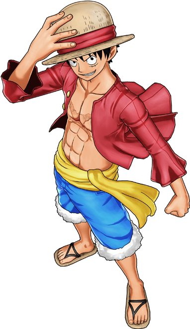
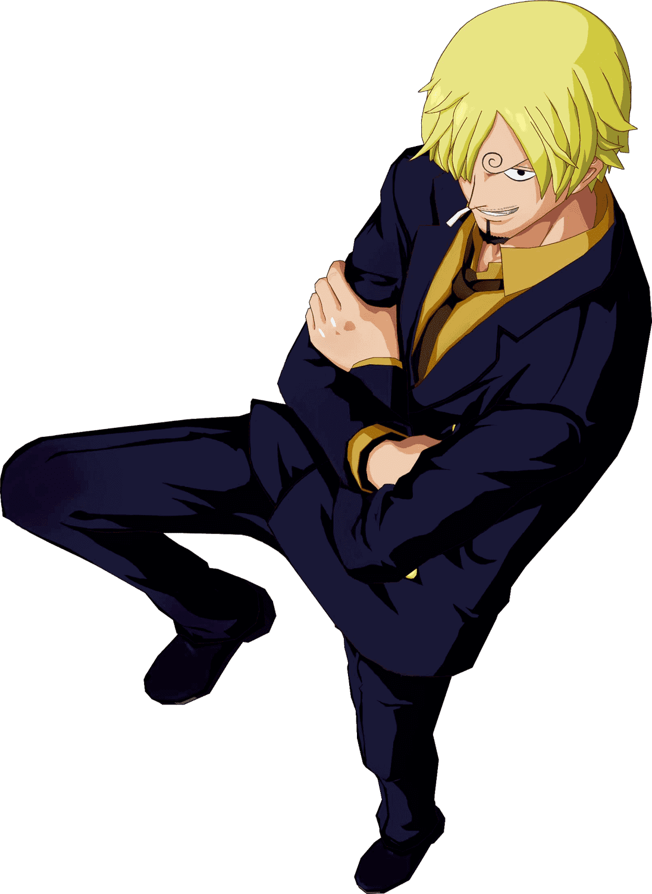
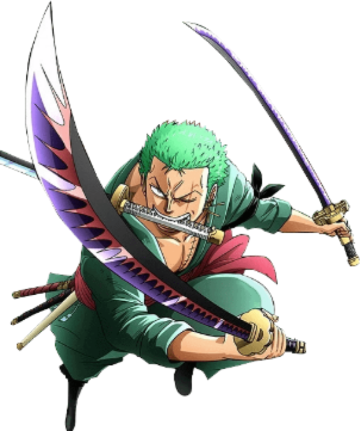

-
Luffy
HP 1200
Descrição
Monkey D. Luffy, também conhecido como Luffy Chapéu de Palha ou Chapéu de Palha,é um pirata e o protagonista do anime e mangá One Piece. Ele é o fundador e o capitão do cada vez mais infame e poderoso Piratas do Chapéu de Palha, bem como um de seus principais lutadores. Seu sonho de vida é se tornar o Rei dos Piratas, encontrando o lendário tesouro deixado pelo falecido Rei dos Piratas, Gol D. Roger.[26] Ele acredita que ser o Rei dos Piratas significa ter a maior liberdade do mundo.
-
Sanji
HP 800
Descrição
"Perna Negra" Sanji, nascido como Vinsmoke Sanji, e também é o cozinheiro dos Piratas do Chapéu de Palha, assim como um antigo chefe de cozinha do Baratie. Ele também é o terceiro filho e a quarta criança da Família Vinsmoke, tornando-o um príncipe do Reino Germa, até que ele oficialmente os renunciou duas vezes. Apesar de Sanji renunciar ao seu sobrenome Vinsmoke, o Governo Mundial o rotula como parte de seu nome em seu pôster de procurado.
-
Zoro
HP 900
Descrição
Roronoa Zoro, também conhecido como "Caçador de Piratas" Zoro,é o combatente dos Piratas do Chapéu de Palha e um ex-caçador de recompensas.Ele foi o primeiro membro a juntar-se à tripulação.Sua fama como mestre espadachim e sua grande força, juntamente com as ações de seu capitão, às vezes levaram os outros a acreditar que ele era o verdadeiro capitão da tripulação antes deste obter sua primeira recompensa, enquanto algumas pessoas acreditam que ele seja o imediato.